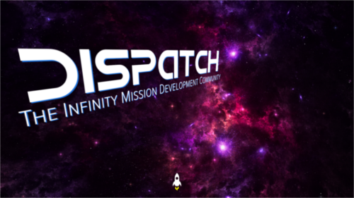
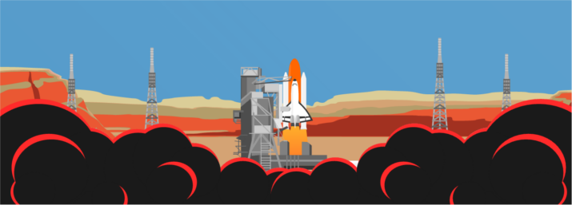

December 2015 - March 11, 2016
I began this project in late 2015 as an inspiration from many parallax websites I had previously viewed. Becoming very interested in interactive scrolling websites, I attempted to create one of my own. I incorporated a "final frontier" theme into my work by making a rocket blast into space.
I also became interested in Scalar Vector Graphics and the applications behind it. I wanted to make something that would encompass both parallax and SVG.
Originally looking for more of a depth perception approach, I angled the texts in a way such that they would pop out. This, however, did not bring out the effect I had anticipated, and resolved to refine my approach.
I designed the website to follow a rocket's journey as it blasted into space and crashed on the moon because it was a simple idea people could follow. I individually created each vector using Inkscape 0.91 and played an ambient soundtrack that incorporated raw audio of Apollo 8 Saturn V's launch as well as Neil Armstrong's famous moonwalk quote.
I desired more substance and content to my work. By chance, I came across Ray Bradbury's poem If Only We Had Taller Been (1971) which spoke to my heart. I incorporated that into my work both as a tribute to Ray Bradbury as well as a finishing touch to my parallax project.
This website was submitted to Awwwards on March 11th, 2016, and CSS Light on the same date.